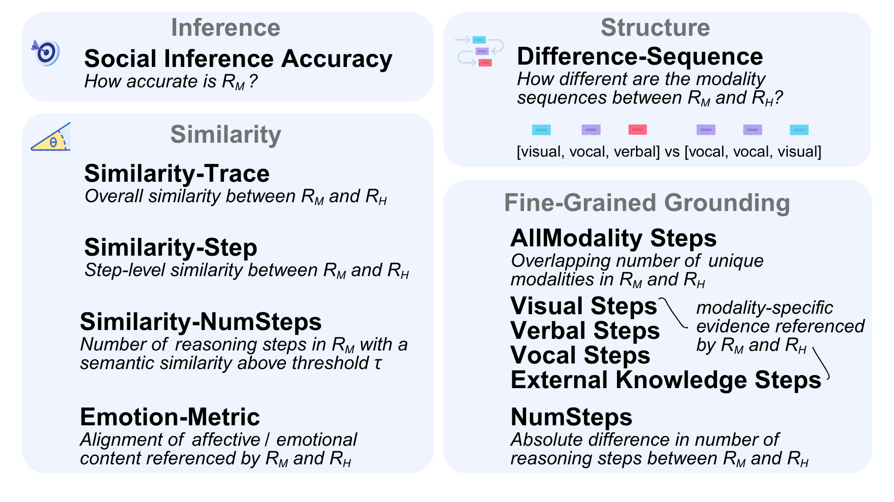

Social reasoning abilities are crucial for AI systems to effectively interpret and respond to multimodal human communication and interaction within social contexts. We introduce Social Genome, the first benchmark for fine-grained, grounded social reasoning abilities of multimodal models. Social Genome contains 272 videos of interactions and 1,486 human-annotated reasoning traces related to inferences about these interactions. These traces contain 5,777 reasoning steps that reference evidence from visual cues, verbal cues, vocal cues, and external knowledge (contextual knowledge external to videos). Social Genome is also the first modeling challenge to study external knowledge in social reasoning. Social Genome computes metrics to holistically evaluate semantic and structural qualities of model-generated social reasoning traces. We demonstrate the utility of Social Genome through experiments with state-of-the-art models, identifying performance gaps and opportunities for future research to improve the grounded social reasoning abilities of multimodal models.
Reasoning traces in SOCIAL GENOME contain fine-grained, multimodal social cues and references to external knowledge.
Social reasoning traces produced by humans can contain complex reasoning paths (sample visualized above) that reference and build upon multimodal evidence and external knowledge across temporal segments of interactions.
Social Genome Overview
Humans rely on social reasoning to integrate information over time from multimodal behaviors (e.g., gestures, speech acts). These social behaviors are often fine-grained, interleaved, and context-dependent, requiring external, contextual knowledge to be interpreted accurately. The Social Genome modeling task studies the ability of multimodal language models to ground social reasoning in multimodal cues and external knowledge.
Modeling task: Given a video V, a question Q about social interactions in the video, and a set of answer options
A = {Acorrect, Aincorrect 1, Aincorrect 2, Aincorrect 3}, a model performing the Social Genome task must generate a reasoning trace R = {e1, e2, … , en}, where each evidence step ei
contributes to selecting an answer Aa from A. Each step ei is tagged with two attributes:
(1) a modality tag mi ∈ {visual, verbal, vocal, n/a} indicating the communication modality, and
(2) an external-knowledge flag ki ∈ {yes, no} indicating whether the step references contextual knowledge external to the video.
Given an input tuple (V, Q, A), the model outputs a tuple (Aa, R).
Metrics:
Metrics in Social Genome assess both the social-inference accuracy of Aa and the semantic and structural qualities of R.
Collectively, these metrics reveal strengths and weaknesses in model social reasoning and multimodal grounding abilities and the extent to which model traces differ from human reasoning.

Overview of metrics introduced by Social Genome, studying social inference accuracy, semantic similarity, structural similarity, and low-level grounding ability of multimodal models when performing social reasoning.
High-Level Findings:
We use Social Genome to study multimodal social reasoning abilities of video understanding models: 2 closed-source models (Gemini-1.5-Flash, GPT-4o) and 5 open-source models (LLaVA-Video, LLaVA-Video-Only, LongVA, Video-ChatGPT, VideoChat2).
Human social inference ability is substantially higher than that of all models (the highest-performing models were Gemini-1.5-Flash and GPT-4o with accuracies of 74.4% and 71.0%, respectively.
Social inference accuracy for models decreased as the number of in-context learning examples increased (for k = 0, 1, 2, 4, 8, 16); in addition, chain-of-thought did not improve model social inference ability.
Models struggled to generate reasoning traces with high semantic and structural alignment to human traces.
Models referenced fewer pieces of multimodal evidence and external knowledge than humans did in social reasoning traces.
[Qualitative Observation] Model social reasoning traces did not reference subtle, fine-grained social cues (e.g., subtle facial movements) as much as humans did.
[Qualitative Observation] Model social reasoning traces were "flatter" than the more hierarchical human social reasoning traces, which build upon intermediate observations to make inferences.
@article{mathur2025social,
title={Social Genome: Grounded Social Reasoning Abilities of Multimodal Models},
author={Mathur, Leena and Qian, Marian and Liang, Paul Pu and Morency, Louis-Philippe},n journal={arXiv preprint arXiv:2502.15109},
year={2025}
}